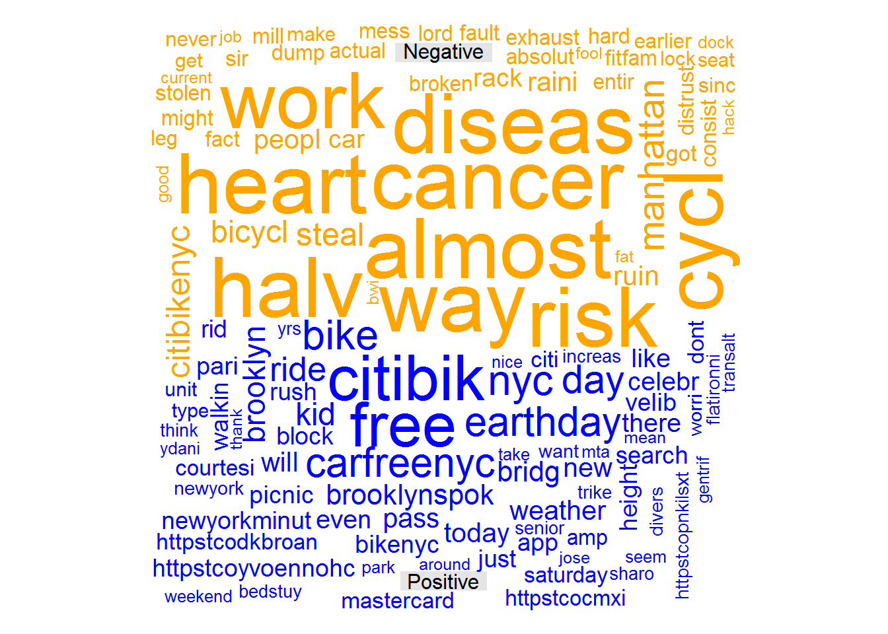

We searched Tweets via Twitter API as a sample to study the image of Citibike in social media. Due to the restriction of Twitter Search API we could only fetch tweets after two weeks ago. In total we got 461 tweets. The number shows that Citibike is not a hot topic on Twitter.
This is the top frequent words in the cleaned Tweets content, after eliminating Citibike related words like “citibike”, “bike”, etc. The most frequent words during last two weeks are about Citibike’s one-day-free-pass campaign on the Earth Day on April 22nd. In addition, #cargreenyc tag and Brooklyn are strongly related topic.
This is an interactive wordcloud of words usage in Citibike related tweets. Interesting words: mastercard, picnic, weather, celebr, healthier…
We used Liu’s lexicon, which contains near 7000 words, for positive/negative words analysis. The interactive plot above demonstrates the result of sentiment analysis to Tweets related to Citibike. The average score in last two weeks remained slightly positive. While a lot of tweets don’t have specific sentiment keywords.

The comparison cloud shows what negative tweets are talking about. It turns out that some of them are talking about health issues like “heart” and “cancer”, which we supposed are actually positive to Citibike. But the cloud also has “risk”, “work” as well as “broken”, “steal” and “ruin”, which need attention from Citibike management to see what happened/should be improved.